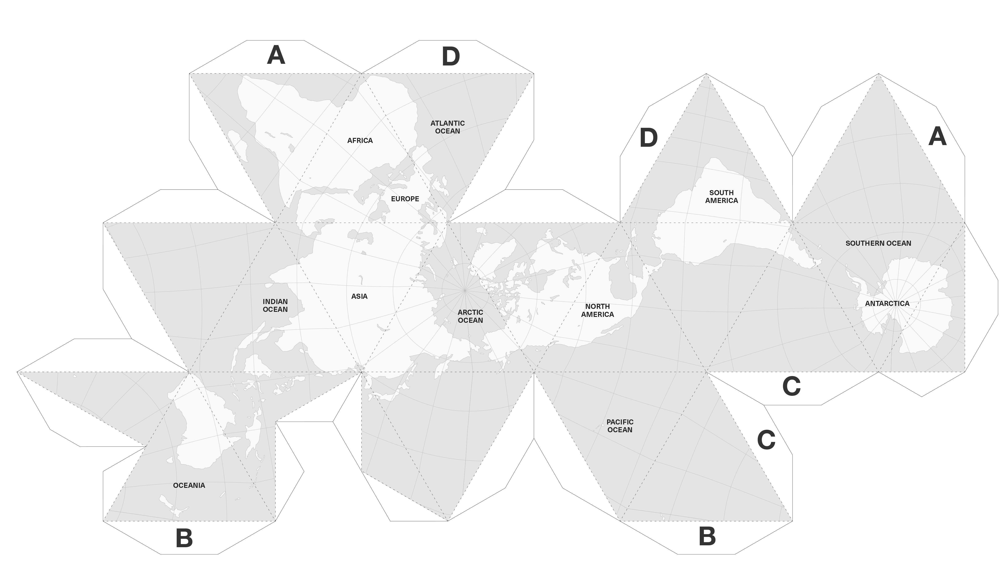
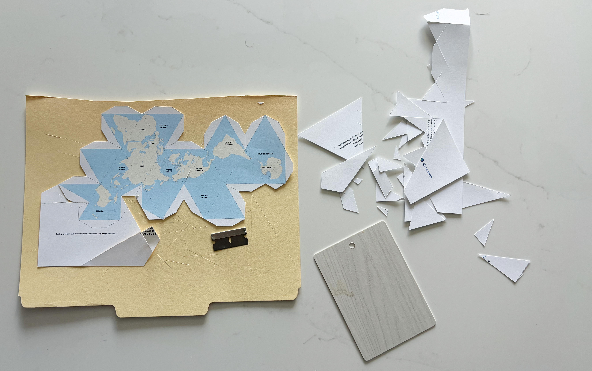
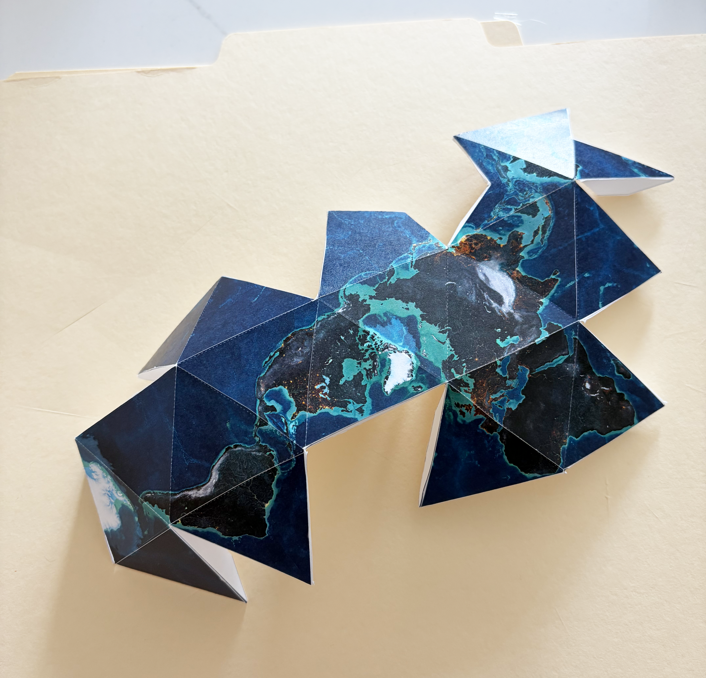
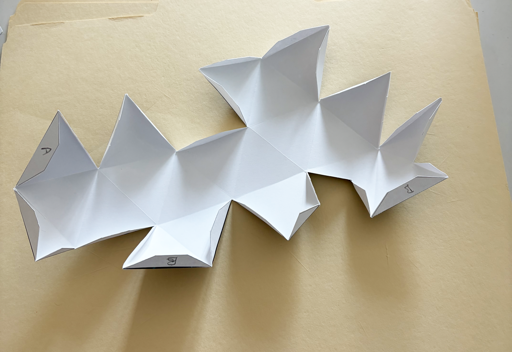
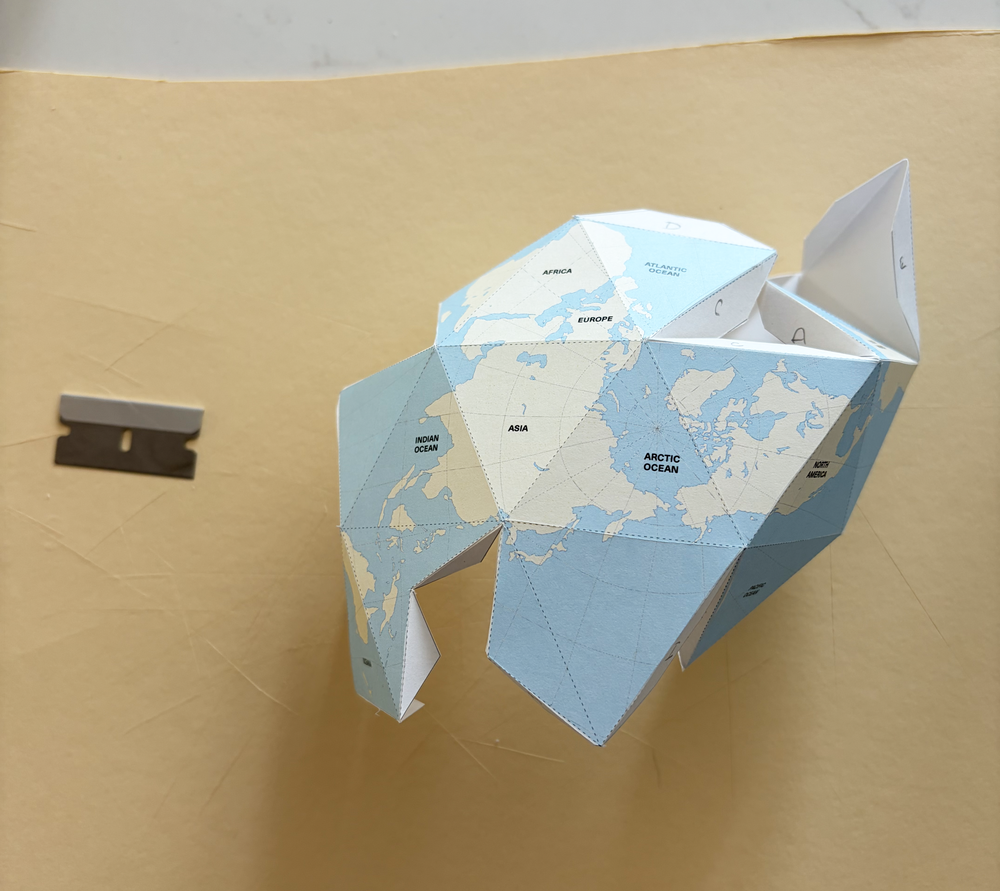
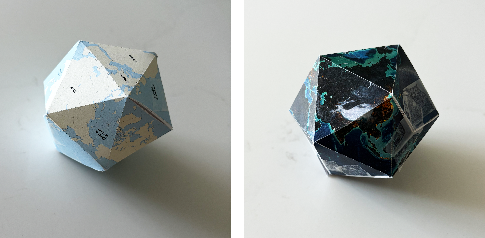

Sustainable Systems Fall 2026: Class 1 Assignment
🌎 Part I: In-Class Assignment 1 | Constructing the Dymaxion Map
Assignment Overview
In this exercise, you will transform Buckminster Fuller’s two-dimensional Dymaxion Map into a three-dimensional icosahedron.
The exercise asks you to physically move between two ways of representing the same planetary surface: a flat map and a three-dimensional geometric form. As you construct the model, pay attention to how geographic relationships change as the map is folded, connected, and transformed.
Work carefully and deliberately. The accuracy of your cuts, scores, folds, and connections will determine how successfully the final icosahedron comes together.
- Printed Dymaxion Map template on heavy cardstock
- Scissors (shared)
- Manila cutting pad
- Wood shim (straightedge)
- Razor blade
- Magic Tape

🗺️ Construction Guide
The construction sequence is:
CUT → SCORE → FOLD + ASSEMBLE → TAPE
Use the diagram below during assembly. The labeled tabs indicate which corresponding edges come together. Join the matching edges progressively in this order:
A → A | B → B | C → C | D → D

1️⃣ Cut the Exterior Profile
Begin by cutting the Dymaxion Map from the surrounding sheet.
-
- UNDOTTED exterior lines = CUT
- DOTTED interior lines = SCORE + FOLD


2️⃣ Score the Fold Lines
The dotted interior lines establish the edges of the 20 triangular faces that will form the finished icosahedron.
The dotted lines must remain connected.
Use very light pressure with the razor blade. The goal is to weaken the surface enough to produce a precise fold — not to separate the triangular faces. Keep the hand holding the straightedge clear of the blade and always move the blade away from that hand.


3️⃣ Fold + Assemble the Icosahedron
Before taping, establish the folds and begin bringing the map into its three-dimensional form.
-
- A → A
- B → B
- C → C
- D → D
The letters indicate which major edges come together; they are not additional cut or fold lines.

4️⃣ Tape the Exterior Seams
Once corresponding edges are aligned, secure the model from the exterior.
The tape becomes part of the constructed object, so keep the application as clean and controlled as possible.
🔎 Final Check
Before considering the exercise complete:

💭 Consider While You Work
As the flat map becomes a three-dimensional object, consider:
What happens to the geographic relationships you saw when the Dymaxion Map was flat?
Which relationships become easier to understand in three dimensions?
Which become more difficult to see?
How does physically transforming the representation change your understanding of the Earth it represents?
Think about the void interior of the icosahedron as you complete it, and how it might relate to themes associated with this week’s reading - Underland.
📚 Part II: Class 1 Readings
Assignment Overview
This week’s readings extend the ideas introduced in Class 1: Seeing Earth — Space, Scale, and Time.
The two readings approach our understanding of Earth from different but related perspectives. Thomas W. Leslie examines Buckminster Fuller’s Dymaxion Map and how changing cartographic representation can reveal different spatial relationships across the planet. Robert Macfarlane’s Underland shifts from spatial scale to deep time, asking us to consider human experience within much longer geological and planetary timescales.
As you read, consider a central question introduced in Class 1:
What becomes visible — and what disappears — when we change the spatial or temporal framework through which we understand Earth?
Complete both readings before the deadline.
There is nothing to submit for this portion of the assignment. Be prepared for a reading quiz at the beginning of class on Thursday | 09-03-26.
Use the guiding questions below to focus your reading and prepare for the quiz.
Reading 1 | Dymaxion Map | Buckminster Fuller Institute
Access Online Reading 1 — Dymaxion Map | Buckminster Fuller Institute - Revised 9-2-26
Guiding Questions
How the Dymaxion Map differs from conventional world maps. What kinds of distortion does Fuller attempt to reduce, and how does the map represent continents and oceans differently?
The idea of Earth as “one island in one ocean.” Consider how this changes the relationships we perceive between continents, nations, and regions.
Fuller’s criticism of traditional world maps. Why did he believe familiar maps reinforce separation rather than reveal global relationships?
The connection between representation and systems thinking. Why did Fuller believe that seeing the whole planet differently could help us better understand shared global problems?
The relationship between the Dymaxion Map and “Spaceship Earth.” What does the map suggest about humanity occupying a single, interconnected planetary system?
Reading 2 | Robert Macfarlane — Underland
Robert Macfarlane, Underland: A Deep Time Journey
Read the first two chapters.
Download Reading 2 — Macfarlane
Guiding Questions
What does Macfarlane mean by the “underland,” and what kinds of places, materials, and histories does he associate with it?
How does moving underground change the way Macfarlane describes our relationship to the landscape above?
How does Macfarlane introduce the idea of deep time? How is geological time different from the timescales through which we normally understand human life?
What relationships does Macfarlane establish between the past, the present, and the distant future?
Why are burial, preservation, memory, and what humans leave behind important to his conception of the underland?
How does changing the temporal scale change what becomes visible about human relationships with the Earth?